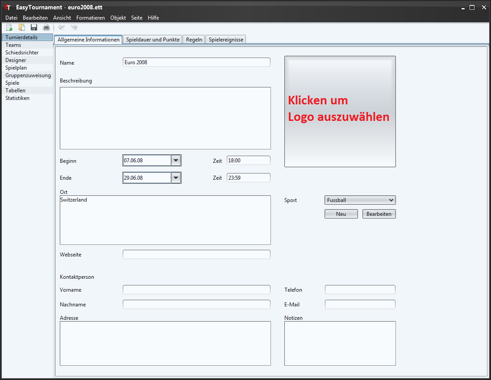

Auf dieser Seite können die allgemeinen Angaben zum Turnier erfasst werden. Der Name sowie das Logo werden auf den Ausdrucken verwendet.
Um ein Logo für das Turnier auszuwählen klicken sie auf die quadratische Schaltfläche oben rechts (siehe Bild: rot beschriftet) und wählen die entsprechende Datei.
Möchten Sie das Logo wieder löschen, dann klicken sie mit der rechten Maustaste auf das Logo und wählen im erscheinenden Kontextmenü den Eintrag "Logo löschen".
Bei der DropDown-Liste Sport können sie die Sportart wählen und setzen damit die Standard-Regeln dieser Sportart. Wie sie diese Regeln, Spieldauern usw. anpassen können sehen sie in den folgenden Kapiteln.
Ist die gewünschte Sportart nicht vorhanden oder möchten sie eine neue Sportart erstellen klicken Sie auf die entsprechende Schaltfläche unterhalb der DropDown-Liste. Welche Einstellungsmöglichkeiten sie dort genau haben, können sie im Kapitel Sport nachlesen.